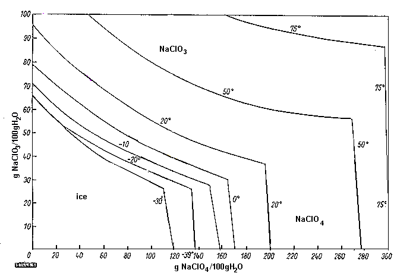
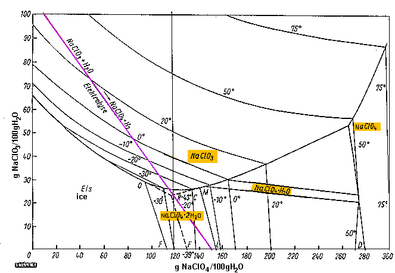
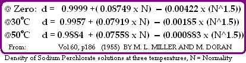

From looking at the graph you can see that Sodium Perchlorate is very soluble indeed and the only really sensible way to get it out of solution is to concentrate the solution by boiling away lots of the water. If you have run your Perchlorate cell for long enough for to convert most of Chlorate to Perchlorate and then destroyed the remaining Chlorate using chemicals you can simply boil all the water away.

The graph above is a simplified version of the original graph which can be viewed below.
The graph below is somewhat complicated because of the fact that Sodium Perchlorate will ppt out of solution in different hydrates, of zero, one and two water molecules.
This depends on concentration and temperature.
The blue line represents a solution of Sodium Chlorate being electrolyzed.
The top end of the line cuts the Chlorate axis at 110g/100ml water.
At 110 grams chlorate per 100ml water we have a 52% solution which is about
760 grams per litre solution which is what is great starting
concentration of Chlorate (for Perchlorate making with a new cell).
This gives about 126.5 grams of NaClO4. However, this requires another
16.5 grams of Oxygen to be added, which comes from about 18.6 grams (ml) of
water. The result is 126.5 grams of NaClO4 per (100 - 18.6 = 81.4) grams of
water, or 155 grams of NaClO4 per 100ml of water. This is the point at where the bottom end of the graph cuts the Perchlorate axis.

The source of this graph is:
A Legendre,"Herstellung von Perchloraten durch
Elektrolyse", Chemie-Ing.-Techn. 34, 1962, number 5, page 379.
In regard to the removal of Perchlorate hydrates see also the text by Paul Pascal, New Treatise on Inorganic Chemistry. Vol. II, No. 1, p. 353 and FIG. 37 (1966), which reports the ternary NaClO4 /NaClO3/H2O diagram.
| Three formula for calculating the density of Sodium Perchlorate solutions at three different temperatures are shown in picuture. |
|  |
| Densitys etc of saturated Sodium Perchlorate solutions | ||||
|---|---|---|---|---|
per100g Water | per liter | |||
| | ||||
| | ||||
| | ||||
| | | |||
| | ||||
| | | |||
| | | |||
| | | |||
| | | |||
| | | |||
| | | |||
| | | |||
| This table is from 'The Perchlorates', Schumacher, p223 & the graph above. The 28°C has been corrected to 38°C. The metastable data has been left out. Col. 4 is calculated from cols. 2 & 3 | ||||
HIT THE BACK BUTTON ON YOUR BROWSER